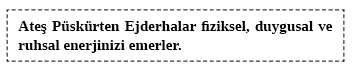

12. BÖLÜM - İYİ NİYETLİ EJDERHALARLA KONUŞMAK
Eninde sonunda bundan bahsetmek zorundaydık değil mi? Tanıdığımız ve sevdiğimiz herkes, kendinin ve başkalarının hayatında mutluluk yaratmak için kendi yaşamlarını kullanmakla ilgilenmezler. Bazı insanlar başkaları için iyi şeyler yapmak isterler ama bunun yerine kendi inançları ve tavırlarını empoze ederler. Böylece sevginin ‘yargılamadan kabullenmek’ olan tanımını ihlal ederler. Ben daha iyi şeyler yapmanızı ve daha başarılı olmanızı isteyen ama sözleri ve davranışlarıyla sizi yaralayan insanları ‘İyi Niyetli Ejderhalar’ olarak adlandırıyorum. İyi niyetliler ama ağızlarından ateş püskürtüp çok büyük zarara neden olabilirler.
Ejderhanın karşısında duran insan, duygusal olarak ve bazen fiziken bilerek zarar veren kişidir. Ejderhanın yardıma ihtiyacı vardır ama bu sizin sunabileceğiniz türden bir yardım değildir. Yine de ejderhayı sevebilirsiniz ama kendi kendinize onu değiştirmeniz mümkün değildir.
İyi Niyetli Ejderha sözlerinin bazen içinizi acıttığını ve size zarar verdiğini bilir. Yine de çoğu zaman iyi niyetlidir ve hatta sizi seviyordur. İyi Niyetli Ejderha arkadaş veya sevgili olarak kurtarmaya değecek biridir. İyi niyetli bir kişiyle konuşmaya değer.
İyi Niyetli Ejderhalar’ı nasıl tanırsınız? İlk başta bilerek veya bilmeden duygusal anlamda size zarar verirler. Tavsiyeleri boştur. Hayata, paraya ve ilişkilere hâkim gibi görünürler ama kendileri bu konuların üstesinden gelememişlerdir. Çoğu durumda iyi niyetleriyle hareket ederler. Bu insanlar bir sevgili, akraba, iş ortağı veya herhangi bir arkadaşınız olabilir.
Çok uzun zaman önce İyi Niyetli Ejderha’ya katlanmaya karar verdiniz. Ne yazık ki bu insan ruhsal anlamda gelişmenize yardım edecek ve sizinle bu hayatın en derin deneyimlerini paylaşacak kişi değildir. Çoğu ejderhalar yıllardır size tavsiyede bulunuyordur. Deneyimleri ne olursa olsun her alanda değilse de çoğu alanda sizden çok biliyorlardır. Ejderha sorununuzu bir derginin son sayısında okumuştur ya da televizyondaki sohbet programında bu konuyla ilgili bir uzman görmüştür. Ejderha, iyiliğiniz için bunu ondan isteseniz de istemeseniz de sizi düzeltecektir. Çoğu insanın hayatlarını onlar için yöneten birçok sayıda İyi Niyetli Ejderha’sı vardır. Ejderhalar hayatınızda ne kadar çoksa yapıcı olmayan iletişime o kadar çok zaman harcarsınız.
Bu insanlarla geçmişte nasıl başa çıktınız?
Muhtemelen onlarla tartışmayı denediniz ama bu strateji başarısızlığa uğradı. Bazen kafanızı sallayarak onları dinliyormuş gibi yaptınız fakat onlar onayınızı talep ederler ve sürekli onların tavsiyelerine uyup uymadığınızı kontrol ederler. Ne yaparsanız yapın bu yaptıklarınız İyi Niyetli Ejderha’yı muhtemelen memnun etmemiştir.
İyi Niyetli Ejderha ile yalnızca kendi seviyesinde başa çıkabilirsiniz. Kendinizi ejderhaya kanıtlamaya çalışarak asla başaramayacaksınız. Ejderha hayatınızı kontrol altına almak ister çünkü kendi hayatı kontrolden çıkmıştır. Yaşamınızı kontrol etmek zorundasınız bu yüzden hedefiniz, ejderhanın düşünme tarzına yeniden odaklanmaktır. Bu, kulağa gerçek hayatta olduğundan daha kolay geliyor. İyi niyetli olanla başa çıkılmasıyla ilgili aşağıdaki örneği gözden geçirin.
Yeni bir araba almak istediğinizi düşünün. İyi Niyetli Ejderha sizin almak istediğinizden farklı bir araba almanızı istiyor. İyi Niyetli Ejderha ile ilişkisi olan çoğu insan onunla tartışmaya girer. Ama artık değil. Bunun yerine arabaya dair tartışmamızda arkadaşımıza şu düşünceyi önereceğiz:
Ben de senin düşündüğün şeyi düşünüyordum. İkinci el araba almak birçok nedenden dolayı çok mantıklı. Ödemeleri daha düşük, daha az yıpranacak ve bozulacaklar. Bana bir iyilik yapıp piyasadaki en iyi ikinci el arabaları araştırır mısın? Kötü karar verip her şeyi berbat etmek istemiyorum.
Bu durumda iki şeyden biri olacak. Ejderha sizin için arabaları araştıracak ki bu onun çalışkanlığını kanıtlar. Böyle yaparsa sizin üzerinde düşünmek için söz vereceğiniz yeni bilgilerle size gelecek. Sizin için arabaları araştırmak istemezse o zaman şunları söyleyin:
Önemli değil. Kimin araba almak konusunda çok şanslı olduğunu biliyorum. Yeni veya ikinci el olsun bir araba almadan önce hangilerinin en iyi arabalar olduğunu ona soracağım. Fikirlerin için teşekkür ederim. (Asla ‘tavsiye’ kelimesini kullanmayın.)
Sonra o ne derse desin siz “Tamam bakacağım” deyin. Sonra da “O bozuk kurutucuyu değiştirdin mi?” gibi bir şey diyerek konuyu onun hayatındaki olaylara çevirin.
Konu bir şey satın almak değilse bile aynı stratejiyi kullanabilirsiniz. İşte çeşitli türden ejderhalarla ilgili günlük hayatınızda işe yarayacak başka bir örnek:
W.I. Ejderha: Okula gittikleri gecelerde çocuklar akşam saat dokuzdan önce yatmalılar. Onların vücut dengelerini bozuyorsun.
Siz: Bundan bahsetmen çok ilginç. Ben de son zamanlarda bunu düşünüyordum. Benim için vücut ritimleriyle ilgili makaleleri araştırır mısın? Böylece bu konuda bilgi sahibi olurum.
W.I. Ejderha: Öyle olduğunu biliyorum çünkü ben öyle büyüdüm ve her zaman işe yaradı.
Siz: Mantıklı. İşte makale bulursan vücut ritimleriyle ilgili her şeyi okumak ve doğru şeyi yapmak isterim. Bu üzerinde düşünmediğim bir şey ve çalışmam gerekiyor. Ritimlerden bahsetmişken kardeşinin bozuk kurutucusu ne durumda?
W.I. Ejderhası’nın Alevini Söndürmek için İletişim
1) Bir ejderha size tavsiyede bulunur.
2) Ejderhayla bahsettiğinin ilginçliği konusunda hemfikir olun.
3) Ejderhaya o konuda daha fazla şey öğrenmek istediğinizi söyleyin.
4) Size o konuda bilgi veya araştırmalara dayanan makaleler göndermesini isteyin.
5) Konuyu onun hayatındaki bir şeyden bahsederek değiştirin.
Hayatınızdaki beş İyi Niyetli Ejderha’nın ismini yazın.
Bu İyi Niyetli Ejderhalar’ın her biri ile ilgili nasıl hissettiğinizi yazın.
Bu ejderhaların her birini ne zaman ele alacaksınız ?
Ateş Püskürten Ejderhalar
Bütün ejderhalar iyi niyetli değildir. İletişim kurduğunuz insanların bazıları sizin hayatta bir konuda veya her alanda başarısız olmanızı isterler. İyi Niyetli Ejderha, kalbinde sizin iyiliğinizin yattığına inanır. Sizin için iyi şeyler yapmak ister. Bunu yapmaya çalışırken sizi duygusal olarak incitir. Öte yandan Ateş Püskürten Ejderha size zarar vermek amacıyla yaklaşır ve ateşinden nasiplendirir.
Bir insan ‘kardeşlerine’ nasıl zarar vermek ister? Bütün amaçları anlamak zordur. Bazı insanların ciddi zihinsel hastalıkları vardır. Bazıları da hayatta o kadar acı çekmişlerdir ki öfkelerini birlikte çalıştıkları veya sevdikleri kişilere yöneltirler. Ateş püskürtmelerinin nedenine bakmaksızın ateşin ateş olduğunu aklınızda bulundurmalısınız.
Sizi ileri götürecek, mutluluk ve aşkı bulmanıza yardım edecek kişilerle birlikte olmak önemlidir. Genelde bağlantılı olduğumuz kişilerle olumlu ilişkiler kurmak en iyi yöntemdir. Sizi duygusal, fiziksel ve/veya ruhsal olarak incitmeye çalışan insanlar hayattaki amacınıza ve görevinize ulaştırmazlar. Bunun yerine duygularınız, fiziksel durumunuz ve ruhsal doğanız üzerinde bir yüktürler.

Bu ejderhaların nazik bir şekilde gerçekle yüzleştirmeleri gerekir. Ateş Püskürten Ejderha’nın odağını değiştirmeye çalışmak ise genellikle etkisizdir; daha doğrudan şeyler yapmak gereklidir.
Tipik Bir Ateş Püskürten Ejderha Portresi
1) Size kötü haber getirmekten zevk alırlar.
2) Size anlatırken nötr veya olumlu haberlere olumsuz eklemeler yaparlar.
3) Dediklerini yapmaz, sözlerini tutmazlar.
4) Onlarla bağlantı kuran insanların sağlıksız ve sorunlu hayatları vardır.
5) Küçük problemleri çok büyütürler.
6) Kendi mallarına saygı duymazlar.
7) Kendileri için yapılan iyiliği takdir etmezler.
Hayatınızdaki Ateş Püskürten Ejderhalar Kimlerdir?
Hayatınızda yer alan ve arkadaşlıktan çok uzak bu ejderhaların özellikleri nelerdir?
Hayatınızdaki bu ejderhaların her biriyle nasıl başa çıkmak istersiniz?
Ateş Püskürten Ejderhalar ile Konuşmak
Bir kimse sizi sürekli kötü hislerle ve olumsuz duygularla baş başa bırakıyorsa bir ateş püskürtücüyle karşı karşıyasınız demektir. Bir insan yukarıdaki özelliklerden herhangi birine sahipse onunla başa çıkmanın iki yolu vardır. Yüzleşme aşağıda bahsedeceğimiz iki seçenekten kesinlikle en iyisidir.
Yüzleşme. Biriyle herhangi bir konuda yüzleşmek pek de hoş değildir. Ateş Püskürten Ejderha ile yüzleşmeye karar verdiğinizde sorulara başvuracaksınız.
1) Hatalı olsam bile hayatta gitmem gereken yolda ilerlemememin zamanının geldiğine nasıl karar veriyorsun?
2) Temel anlaşmazlıklarımız olsa da bundan sonra birbirimizin hayatta yöneldiği yollara saygı duyacağımızın garantisini nasıl verirsin?
3) Beni kırınca ve seninle zaman geçirmemeye sebep olunca ne kazandın? Bundan vazgeçip beni bana bırakırsan buna değer mi?
4) Hayatımda beni öldürmeyecek hatalar yapmama izin verecek misin? Yanlış yöne gideceğimi düşündüğünü biliyorum ama bu birinin hayatına mal olmayacak. Yani fiziksel zarar sezmediğin sürece ders alacağım hatalar yapmama müsaade edecek misin?
İletişimi Kesme. Bu karar artık yapılacak son şeydir. Bu, hayatınızdaki Ateş Püskürten Ejderha’nın size veya isteklerinize saygı göstermediği anlamına gelir. Bu yüzden sizinle ilgili bakış açısını değiştirene kadar onunla iletişimi keseceksiniz. Ejderha size kendiniz olma özgürlüğünü vermek konusunda istekli değilse iletişim kurmaya devam etmenin ne size ne de ejderhaya bir faydası vardır. Siz değerini tahmin bile etmeden başkalarına kendi yollarına gitme özgürlüğü tanıyorsunuz. Size aynı saygıyı göstermeyecek insanlar hayatınızdan tamamen çıkarılabilirler. Şans eseri o insan bir gün sizinle sevecen bir ilişki kurmak konusunda istekli olarak geri dönebilir.
Ona şunu söyleyebilirsiniz: Bunu söyleyeceğim için çok üzgünüm. Hayatımda ‘X’ kişiyi seçtim. Kendim olmama izin vermedin. Sana insan olarak değer veriyorum, her zaman da vereceğim. Ancak hayatımın sorumluluğunu kendi ellerimde tutmalıyım. Bir gün burada olduğumu bilerek geri döndüğünde ve içtenlikle kendim olmama izin verdiğinde memnuniyetle seni karşılayabilirim. O gün mükemmel olacak. Ancak şimdilik mutluluğuna katkıda bulunamam çünkü senin isteklerine uymamı istiyorsun. Buna izin veremem. Sorumlu biri olacağım. Bu yüzden zihninde beni serbest bırakmayı istediğin zamana kadar güle güle.
Bu düşünceleri istediğiniz tarzda aktarabilirsiniz. Bakış açınızı anlatırken kesin bir dil kullanmanız çok önemlidir. Umduğunuz davranış, o insanın kısa zamanda sizi ‘siz olmaya’ bırakması ve durumu kabul etmeye istekli şekilde geri dönmesidir. Ateş Püskürten Ejderha ile başa çıkmadaki son durağınız budur.
İnsanlarla konuşmaya son vermek hiçbir zaman isteğimiz şey değildir. İdeal olanı, karşılaştığımız ve değer verdiğimiz herkesle mümkün mertebe en iyi iletişimi kurmaktır. Başkalarına hiçbir zaman ateş püskürtülmez elbette. Her zaman başkalarını yargılamadan kabul etmeye çalışırız. Ejderhalar, eninde sonunda sizinkini olduğu kadar ailenizin ve sevdiklerinizin de duygularını, ruhunu, fiziksel durumunu etkileyeceklerdir.
Kabul etmek, çevrenizdekilere ‘kendileri olma’ hakkını tanımanızdır. Bunu, kendinizi ve başkalarını tamamen kabul etmek ve yargılamamak şeklinde de tanımlayabiliriz. Birinin, sizin istediğiniz kişi değil de onun istediği kişi olmasına izin verirsiniz. Yorum yapmak bir kişiyi değerlendirmek, yargılamak veya bir şekilde değiştirmeye çalışmak anlamına gelebilir. Kişileri yorum yapmadan kabul etmek, yargılama veya değiştirmeye çalışmadan onlara kendileri gibi olma hakkını tanımanızdır. Kabul etme, felsefedeki koşulsuz sevgiye benzer. Gerçek sevgi koşullara bağlı bir şey değildir. Sevgi verileni koşulsuz kabul etmektir.
Aşağıdaki boşluğa, yükümlülük, gereklilik veya yargılama olmaksızın sevdiklerinizin isimlerini yazın.
Bu insanlara olan minnettarlığınızı nasıl ifade edebilirsiniz?
Bugün bitip de haftalar geçerken başkalarını koşulsuz sevme konusunu düşünün. Onları sizin istediğiniz insan değil de kendileri oldukları için kabul etmeye yönelik bu gerçeği gözden geçirin. Kendinizi ve önemsediğiniz insanları yargılarken nasıl hissettiğinizi gözlemleyin. Gerçekliğe ait bu kesitin her şeye ve etrafınızdaki herkese yönelik algılarınızı nasıl değiştirebileceğini izleyin. Gelecek aylarda insanlara kendileri olma hakkını tanıdıkça, ne kadar insanın size aynı saygı, hayranlık ve sevgiyi göstereceğinin farkına varın.
Etrafınızı çabalarınızı ve hedeflerinizi destekleyen insanlarla doldurarak ilerlemenin ne kadar kolaylaştığını keşfedeceksiniz. Başkalarına kendileri olma hakkını vererek kendi içinizdeki bilmediğiniz mutluluğun önünü açacaksınız.